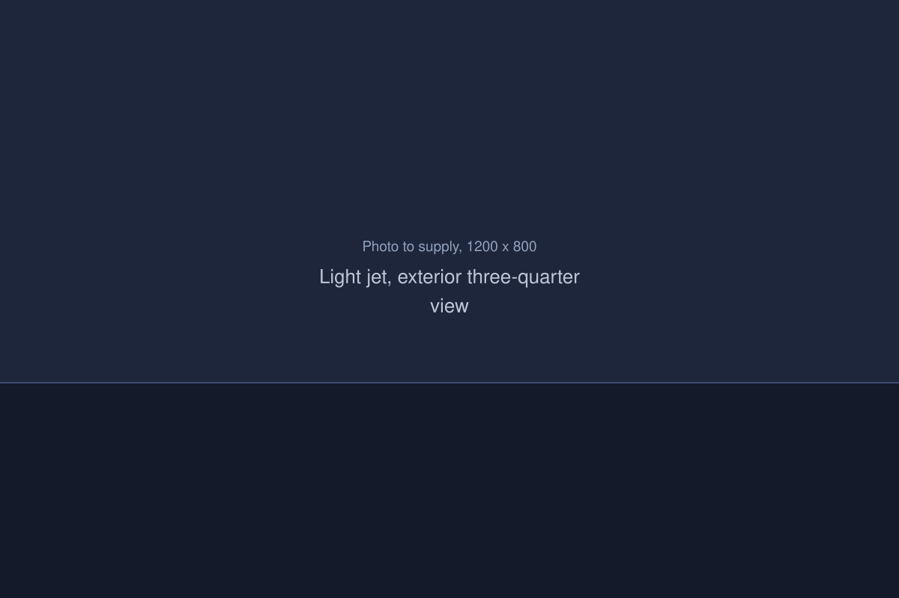
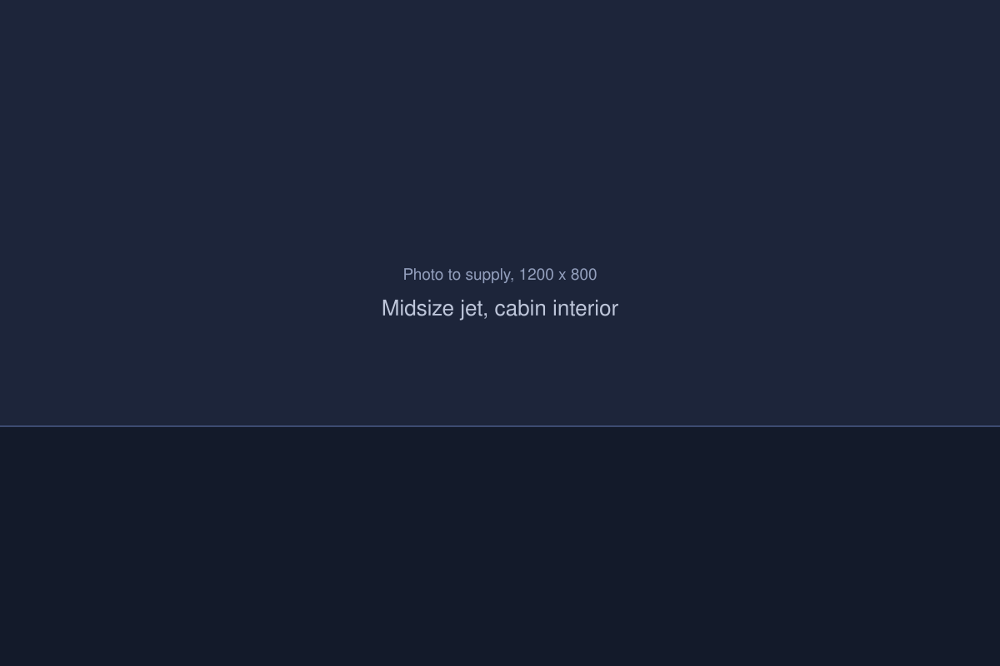
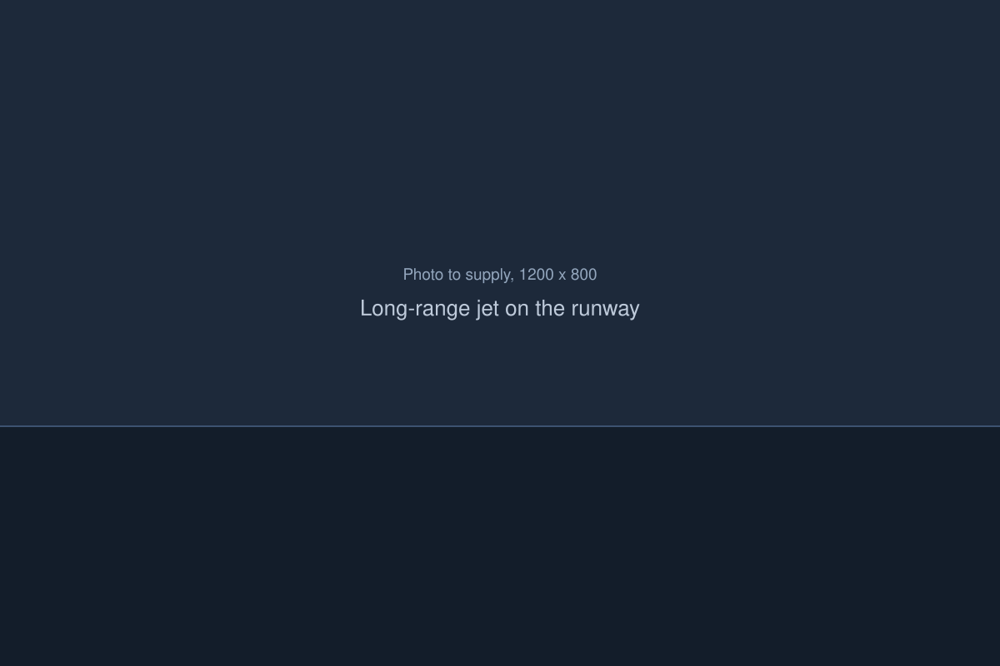

Charter de jatos privados
Escolhe a hora de partida e o aeroporto. Nós encontramos a aeronave certa, tratamos da documentação e recebemo-lo no terminal.
Para quem é
- Executivos com reuniões em duas cidades no mesmo dia
- Famílias e grupos que viajam com crianças, animais ou equipamento desportivo
- Hotéis e concierges que organizam a chegada dos seus hóspedes
- Operadores de golfe e turismo que deslocam pequenos grupos entre regiões
O que está incluído
- Aeronave, tripulação, combustível e catering standard
- Taxas de aeroporto, handling e passageiro, discriminadas no orçamento
- Acesso a terminal privado nos aeroportos que o têm
- Uma única pessoa de contacto, do pedido à aterragem
- Transfer terrestre nas duas pontas, a pedido
Rotas habituais a partir de Lisboa
| Destino | Tempo de voo |
|---|---|
| Faro | 40 min |
| Madrid | 1 h 10 |
| Funchal, Madeira | 1 h 45 |
| Paris | 2 h 25 |
| Genebra | 2 h 30 |
| Londres | 2 h 40 |
A frota
Categorias de aeronave apresentadas como exemplo. A aeronave exata e o respetivo operador são indicados em cada orçamento.
-

Jato ligeiro
- Lugares
- Até 6
- Alcance
- Cerca de 2500 km
- Ideal para
- Península Ibérica, Marrocos e trajetos europeus curtos
-

Jato médio
- Lugares
- Até 8
- Alcance
- Cerca de 4500 km
- Ideal para
- Londres, Paris, Genebra, com cabine em que se anda de pé
-

Jato de longo curso
- Lugares
- Até 14
- Alcance
- Mais de 9000 km
- Ideal para
- Voos transatlânticos e noturnos
Perguntas frequentes
Com que antecedência devo reservar?
Alguns dias é o ideal. Em viagens urgentes conseguimos muitas vezes organizar a partida em poucas horas, consoante a disponibilidade de aeronave, tripulação e slots de aeroporto.
Com que antecedência devo chegar ao aeroporto?
Normalmente 20 a 30 minutos antes da partida num terminal privado. Confirmamos a hora exata com a reserva.
Posso levar animais ou bagagem volumosa?
Na maioria dos casos, sim. Indique-o no pedido para escolhermos uma aeronave com o porão adequado e verificarmos as regras de entrada no destino.
Quem opera o voo?
Cada voo é operado por uma transportadora aérea licenciada, titular de Certificado de Operador Aéreo. O nome do operador e o número do certificado constam do orçamento e do contrato.
Diga-nos para onde e quando
Respondemos com opções e preço fechado, normalmente em duas horas.